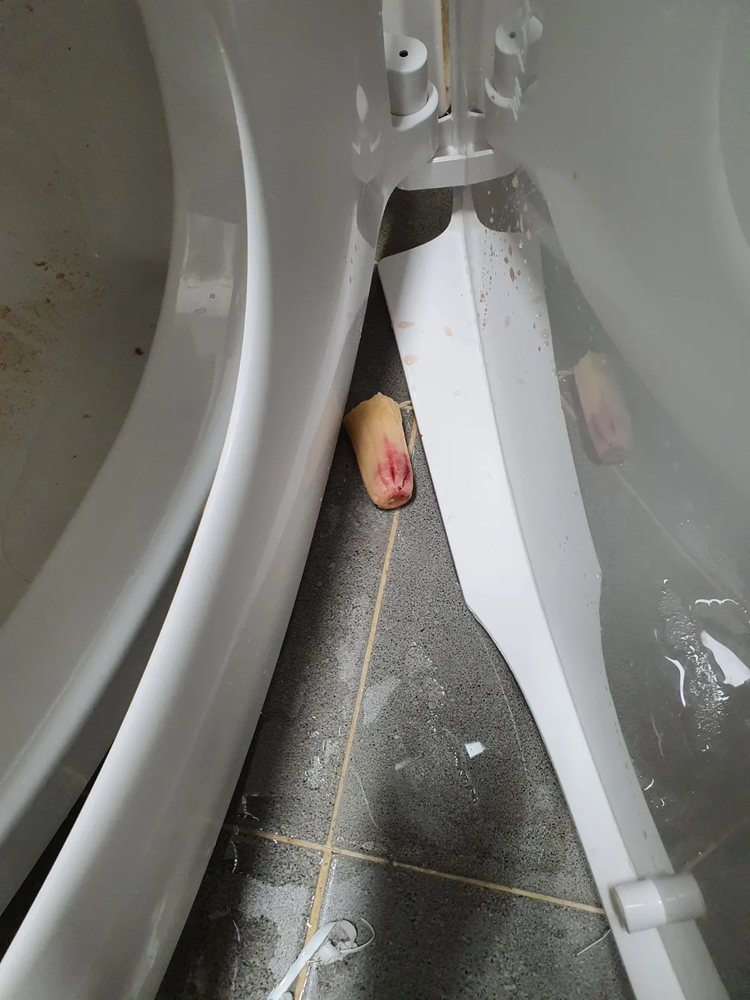
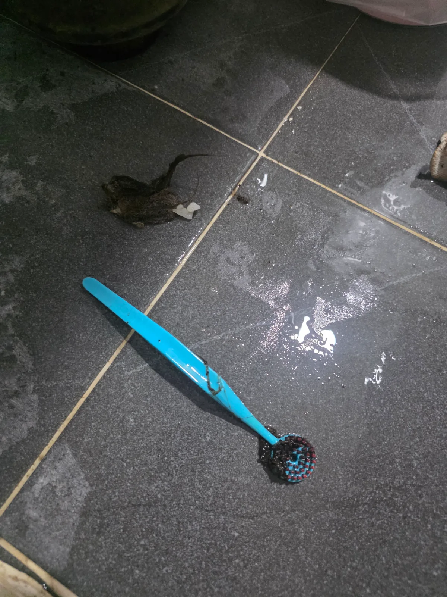
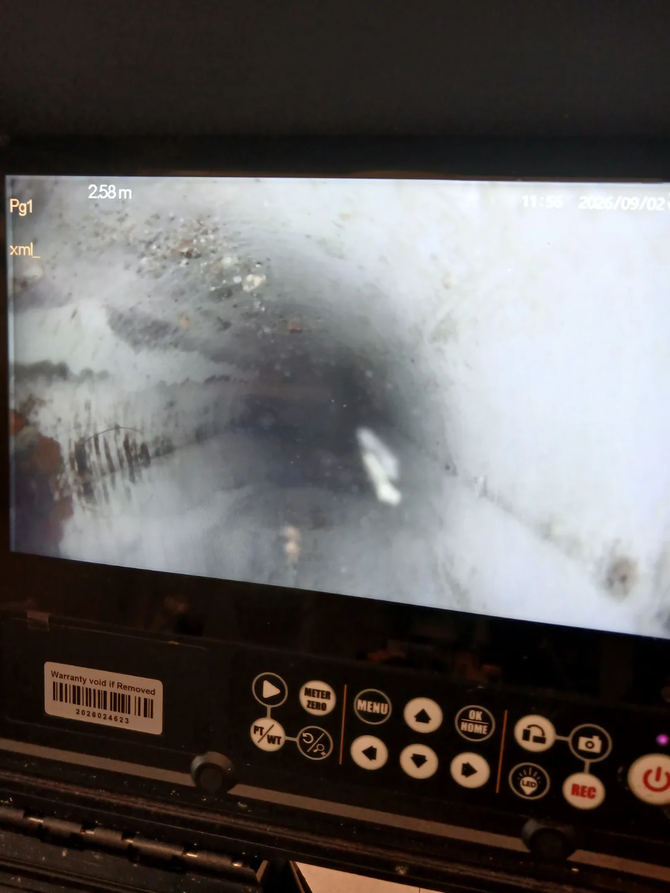
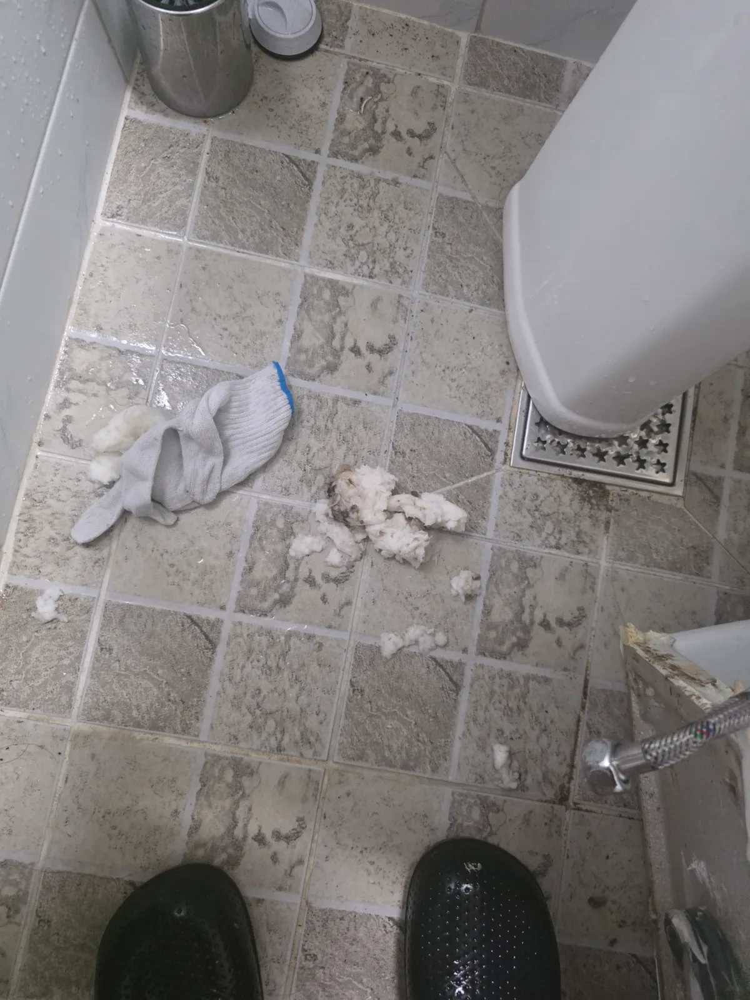

송파구 잠실동 변기막힘 | 원인은 정화조 출수관 새벽 3시까지 고압세척했습니다
송파구 잠실동 변기막힘 현장에서 관통기와 석션이 듣지 않아 변기를 탈거한 결과 오수관이 가득 차 있었고 204샤프트와 내시경검사 후 정화조
SHILLA FIELD NOTES
서울·경기에서 직접 진단하고 해결한 배관 작업 사례입니다.
송파구 잠실동 변기막힘 현장에서 관통기와 석션이 듣지 않아 변기를 탈거한 결과 오수관이 가득 차 있었고 204샤프트와 내시경검사 후 정화조

수지구 풍덕천동 변기막힘 변기 안에 길쭉한 튜브형 치약이 걸려 배수가 막힌 현장으로 석션으로 회수되지 않아 변기를 탈거하고 에어건으로

광진구 화양동 변기막힘 변기에 물과 휴지가 내려가지 않아 긴급출동한 뒤 석션 작업으로 내부에 걸려 있던 여성용 위생용품인 탐폰을 꺼내 정상적으로

종로구 동숭동 변기막힘 변기 내부에 들어간 청소솔로 배수가 원활하지 않아 변기를 탈거하고 분해해 청소솔 회수

파주시 동패동 싱크대막힘 샤프트 배관스케일링과 석션으로 배관 내부의 굳은 기름때를 처리하는 통수 작업 진행

동작구 상도동 싱크대막힘 내시경 진단 후 샤프트 배관스케일링으로 기름 슬러지와 음식물 찌꺼기 제거 및 통수 확인

성동구 성수동 변기막힘 변기를 탈거해 에어건으로 휴지와 물티슈를 제거하고 재설치 및 통수 확인 후 백시멘트 마감

용산구 이촌동 배관공사 공용배관 고압세척과 굴착 진단 후 파손부를 새 배관으로 연결 보강하고 통수검사 및 몰탈 마감

시흥시 하상동 변기막힘 변기 꿀렁거림으로 탈거 후 오수관을 샤프트와 에어건으로 작업하고 점성 오염물 제거 및 배수 확인

강남구 신사동 하수구막힘 에어비앤비 입실 전 욕실 배수구 트랩과 배관을 점검하고 석션으로 이물질 제거 후 통수 확인

동작구 노량진동 하수구막힘 면접 전날 막힌 세면대 배관을 점검하고 석션으로 머리카락과 비누 찌꺼기를 제거해 배수 확인

하남시 풍산동 싱크대막힘 내시경 점검 후 싱크대 하부와 싱크볼에서 석션으로 오염수 및 음식물 제거 후 배수 확인

동대문구 이문동 변기막힘 석션으로 빠지지 않은 이물질을 변기 탈거와 에어건으로 제거하고 재설치 후 통수 확인

송파구 석촌동 변기막힘 실내 관통과 내시경 진단 후 외부 오수관까지 추적해 고압세척 및 통수 작업 진행

수지구 풍덕천동 변기막힘 석션 작업 후 변기를 탈거해 하부 배출구와 오수배관을 확인하고 필요한 배관 작업 진행

안양시 만안구 안양동 변기막힘 반복 막힘으로 변기를 탈거해 에어건으로 이물질을 제거한 뒤 재설치

부평구 부평동 싱크대막힘 내시경으로 배관 상태를 확인하고 샤프트와 석션으로 기름때 및 슬러지 제거 후 내부 재점검

수원시 권선구 세류동 변기막힘 변기를 탈거하지 않고 석션으로 물티슈와 숙주 등 음식물을 회수한 뒤 재발 예방 안내

동작구 대방동 변기막힘 석션 후 변기를 탈거해 내부 청소포를 제거하고 에어건으로 추가 작업한 뒤 재설치 및 배수 확인

중구 필동 하수구막힘 내시경으로 위치를 확인하며 관통기와 샤프트로 대형 스펀지를 회수하고 고압세척으로 잔여물 정리

남양주시 별내동 싱크대막힘 새벽 싱크대 막힘으로 출동해 내시경 점검 후 샤프트와 석션으로 작업하고 정상 배수 확보

강동구 천호동 싱크대막힘 내시경 진단 후 석션과 샤프트로 오염물을 제거하고 배관 내부 재점검 및 싱크대 통수검사

관악구 봉천동 변기막힘 탈거한 변기를 에어건과 석션으로 작업하고 하부 오수관 점검 후 재설치 및 최종 통수 확인

시흥시 하중동 변기막힘 변기를 탈거해 오수관으로 접근하고 관통기 및 샤프트로 이물질 제거 후 원상 복구와 배수 확인

강남구 신사동 하수구막힘 욕실 배관을 내시경으로 확인하고 샤프트로 이물질을 분리한 뒤 석션으로 회수 및 통수 확인

남양주시 호평동 변기막힘 아파트 변기를 탈거해 관통기로 걸린 플라스틱 용기를 제거하고 재설치 후 배수 및 누수 확인

강동구 길동 변기막힘 변기를 탈거해 에어건으로 내부 트랩의 전자담배를 제거하고 재설치 후 반복 물내림 검사

강동구 암사동 싱크대막힘 아파트 싱크대 기름때를 샤프트로 분쇄하고 고압세척으로 잔여 오염물을 제거한 뒤 배수 확인

구로구 구로동 배관공사 빌딩 천장 배관의 누수 지점을 확인하고 손상부에 보강재와 고정 밴드를 체결해 누수 차단

송파구 거여동 배관공사 욕실 바닥을 철거해 몰탈이 굳은 기존 배관을 교체하고 배수 구배를 고려한 신설 배관 통수검사

이천시 장호원읍 하수구막힘 PVC와 주철배관에 작업구를 확보해 샤프트로 기름때를 제거하고 통수검사 후 보수

강남구 대치동 하수구막힘 오래된 주철배관을 부분 타공해 굳은 기름때를 제거하고 주요 구간을 점검한 뒤 통수 확인

강남구 삼성동 하수구막힘 관공서 천장 하수배관을 부분 타공해 굳은 이물질을 제거하고 통수검사 후 타공부 보수

화성시 청계동 싱크대막힘 싱크대 하부를 개방해 샤프트로 굳은 기름때와 음식물 슬러지를 제거한 뒤 정상 배수 확인

마포구 합정동 변기막힘 변기를 탈거해 트랩과 오수관을 구분 점검하고 에어건으로 이물질 제거 후 재설치 및 배수 확인

강남구 역삼동 하수구막힘 병원 배수구를 스프링으로 먼저 관통한 뒤 고압세척으로 잔여 이물질을 제거하고 배수 확인

강남구 대치동 하수구막힘 실내 보양 후 천장을 부분 개방해 에어컨 드레인관을 점검하고 막힘 처리 후 통수검사

광주시 쌍령동 싱크대막힘 아파트 싱크대 배관을 내시경으로 점검하고 샤프트로 기름때를 제거한 뒤 재검사 및 통수 확인

구리시 수택동 하수구막힘 세탁실 바닥 배수구의 머리카락과 섬유 찌꺼기를 제거하고 잔여 이물질 정리 후 통수 확인

수원시 팔달구 화서동 변기막힘 변기를 탈거해 석션과 에어건으로 이물질을 처리하고 오수관 점검 후 재설치 및 정상 배수 확인

용인시 처인구 원삼면 하수구악취 화장실 바닥 유가와 연결 배관의 요석을 내시경으로 확인하고 샤프트 및 석션 작업 후 재점검

구리시 수택동 하수구막힘 학교 급식실 배관을 내시경으로 확인하고 샤프트와 고압세척으로 기름때 및 음식물 제거

용산구 이태원동 하수구막힘 내시경으로 식당 배관의 기름때를 확인하고 샤프트로 굳은 유지방과 슬러지를 제거해 배수 복원

성동구 도선동 변기막힘 석션으로 빠지지 않는 이물질을 탈거 후 에어건으로 작업해 변기 트랩에 걸린 석박지 제거

관악구 신림동 변기막힘 에어 압력으로 변기 막힘을 관통하고 노후 필밸브를 교체한 뒤 급수와 물내림 및 누수 확인

성동구 옥수동 싱크대막힘 내시경 점검 후 노후 주름호스를 교체하고 샤프트 배관세척 및 통수와 연결부 누수 확인

서초구 잠원동 싱크대막힘 좁은 싱크대 하부 배수호스를 분리해 기름 슬러지를 석션한 뒤 재조립하고 배수 확인

강남구 논현동 변기막힘 오피스텔 변기를 석션으로 통수한 뒤 배수 상태를 확인하고 재발 시 탈거 점검 필요성 안내

단원구 고잔동 싱크대막힘 배관 초입의 불어난 쌀과 잡곡을 석션하고 깊은 구간은 샤프트로 작업해 정상 배수 확보

광진구 자양동 하수구막힘 외부 배수구의 붉게 굳은 유지방을 제거하고 배관에 남은 기름때와 음식물을 고압세척

강남구 대치동 배관공사 천장 점검구를 만들고 막힌 에어컨 드레인관을 절단해 석션한 뒤 통수 확인 및 배관 복구

평택시 비전동 싱크대막힘 내시경으로 배관에 쌓인 기름때를 확인하고 샤프트로 분쇄 제거한 뒤 싱크대 배수 확인

송파구 방이동 하수구막힘 감자탕 식당 외부 집수정에서 배관에 접근해 샤프트와 고압세척으로 유지방을 제거하고 통수 확인

마포구 서교동 하수구막힘 주방 트렌치의 음식물과 오염물을 제거하고 연결 배관을 샤프트로 세척한 뒤 통수 확인

노원구 상계동 하수구막힘 욕실 바닥에서 접근이 어려운 막힘 구간을 아래층 천장 배관 작업구로 접근해 스프링 관통

중랑구 면목동 변기막힘 변기를 탈거해 하부 오수관과 내부를 구분 점검하고 도기 깊숙이 끼어 있던 레몬 제거

강남구 도곡동 변기막힘 오피스텔 변기 역류를 탈거 후 에어건으로 작업해 짬뽕과 음식물을 제거하고 배수 확인

광진구 자양동 변기막힘 석션으로 빠지지 않는 빗을 변기 탈거 후 에어건으로 제거하고 변기 재설치

구로구 구로동 하수구막힘 오피스텔 공용 하수관에 PC방 천장 배관으로 접근해 샤프트로 엉킨 이물질 제거

강남구 역삼동 싱크대막힘 긴 횡주관의 오수와 기름때를 석션한 뒤 내시경 점검 및 샤프트 배관스케일링 후 통수시험

부평구 부평동 변기막힘 객실 변기를 탈거한 뒤 주차장 천장 메인 오수관을 찾아 관통 장비로 막힘 구간 처리

용산구 한남동 하수구막힘 욕실 바닥 하부 배관에 천장으로 접근해 타공하고 관통 장비로 막힘 구간을 처리해 통수 복구

강남구 삼성동 하수구막힘 내시경으로 식당 하부 막힘과 배관 경로를 확인하고 천장 점검구로 접근해 관통 및 통수 확인

서초구 방배동 싱크대막힘 싱크대 하부로 내시경과 샤프트를 함께 투입해 막힘 구간을 보며 배관스케일링 진행

강동구 명일동 고압세척 변기 역류로 집수정과 정화조 합류 출수관을 점검하고 고압세척 및 샤프트로 막힘 관통

영등포구 대림동 싱크대막힘 배관 내시경으로 싱크대 배수관에 걸린 포크를 확인해 꺼내고 물을 흘려 정상 배수 확인

영등포구 당산동 하수구막힘 치과 상부와 아래층 천장 배관에 접근해 샤프트로 양방향 배관스케일링 후 배수 복원

송파구 가락동 하수구막힘 어린이집 반지하 설비공간에 진입해 단독 배수관을 샤프트로 작업하고 정상 배수 복원

부평구 갈산동 하수구막힘 기름 섞인 오수로 가득 찬 외부 집수정을 확인하고 배관 유지분과 음식물을 고압세척으로 제거

금천구 가산동 배관공사 노후 노허브배관과 손상된 가스켓을 철거하고 새 배관 및 커플링 설치로 누수 구간 복구

동대문구 장안동 변기막힘 관로탐지로 매립 오수관 경로와 정화조 출수관을 찾아 막힌 구간을 관통하고 오수 흐름 복원

수지구 풍덕천동 변기막힘 변기 내부 막힘을 점검한 뒤 압축 관통 장비로 오물을 통과시키고 반복 물내림으로 배수 확인

서초구 서초동 변기막힘 변기를 탈거해 마라탕 재료를 꺼내고 에어건으로 잔여 음식물을 배출한 뒤 재설치 및 통수 확인

동작구 상도동 변기막힘 석션 작업 후 오수관 입구의 도기 칫솔받침대를 제거하고 에어건으로 내부 배관 정리

강서구 화곡동 변기막힘 변기를 탈거해 내부 배출구의 머리카락과 배설물 이물질을 제거하고 재설치 후 통수 확인

하남시 미사동 변기막힘 아파트 변기 내부에 걸린 커다란 망고씨를 반복 석션 작업으로 꺼낸 뒤 정상 통수 확인

강동구 천호동 하수구막힘 화장실 바닥 배수구 역류를 내시경으로 점검하고 석션 및 샤프트 작업 후 정상 통수 확인

성동구 성수동 하수구막힘 석션과 내시경으로 막힘 구간을 확인하고 고압세척으로 기름 슬러지를 제거해 배수 회복

중랑구 상봉동 변기막힘 아파트 변기를 탈거한 뒤 하부에서 에어건으로 내부 이물질을 제거하고 통수 확인 후 재설치

용산구 한남동 싱크대막힘 석션으로 고인 물과 오염물을 제거하고 샤프트로 기름 슬러지를 분쇄한 뒤 정상 통수 확인

강남구 논현동 변기막힘 원룸 변기 하부에 걸린 상추와 채소를 탈거 후 제거하고 통수 확인 및 변기 재설치

서초구 양재동 변기막힘 관통기로 해결되지 않은 변기 내부 칫솔을 석션으로 제거하고 정상 배수 확인

강남구 대치동 싱크대막힘 석션으로 오염수와 이물질을 제거하고 샤프트 배관스케일링 및 내시경 점검 후 통수 확인

송파구 가락동 변기막힘 바닥으로 넘친 변기 역류 원인을 확인하고 외부 오수관 타공과 고압세척 후 내시경으로 배수 확인

서초구 서초동 변기막힘 관통과 석션으로 해결되지 않아 변기를 탈거하고 내부 및 오수관 초입부의 이물질 제거

서초구 반포동 변기막힘 변기에 빠진 빗으로 배수가 느려져 석션을 시도한 뒤 변기 탈거와 에어건 작업으로 이물질 제거

마포구 도화동 변기막힘 변기 두 곳이 동시에 역류해 공용 오수관과 정화조를 점검하고 막힘 원인 제거 후 배수 확인

강남구 역삼동 변기막힘 석션으로 풀리지 않은 막힘을 변기 탈거 후 내부 이물질 제거로 처리하고 정상 배수 확인

서초구 서초동 변기막힘 반복되는 변기 막힘 증상을 점검하고 막힘 원인을 제거한 뒤 정상 배수 확인

송파구 잠실동 변기막힘 변기 역류 징후를 점검하고 막힘 원인을 제거한 뒤 정상 배수 확인